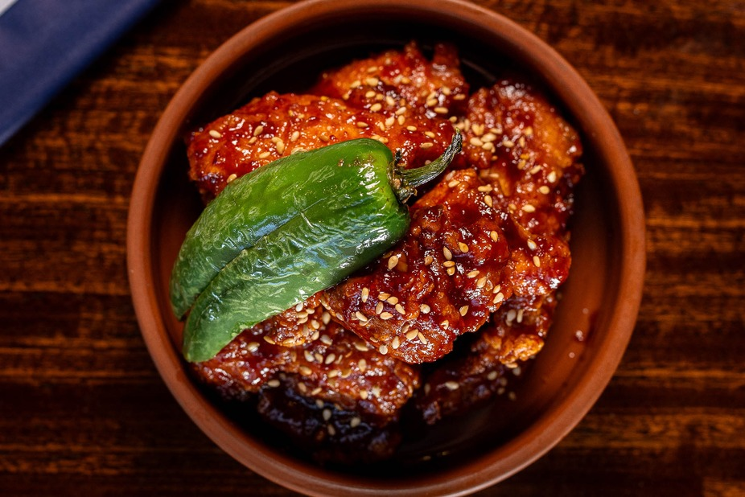

Home
Sweet and Spicy Chicken

Description
Takeout style crispy pan fried chicken tossed in a sweet and spicy Asian style glaze.
This is one of my absolute favorite Asian main courses to make at home. I like to serve this chicken over steamed white rice. You can also serve this dish with chow mein, steamed veggies, a fresh salad, and so much more!
This recipe serves about 2-4 people depending on everyones appetite. If you are cooking for a large crowd, simply double the recipe! If you are cooking for a small crowd, not to worry this chicken makes amazing leftovers! Store leftovers in an airtight container in the fridge for up to two days.
Ingredients
- 1 ½ lbs. chicken thighs cut into 1" cubes
- 2 tbsp oil
- ¼ cup cornstarch
- ¼ cup all-purpose flour
- 2 cloves garlic minced
- 1 tablespoon rice wine vinegar
- 3 tablespoon soy sauce
- ¼ teaspoon sesame oil
- ½ teaspoon sambal oelek or sriracha
- 2 tablespoon ketchup
- 1 small jalapeno finely chopped
- 1 tbsp brown sugar
- ¼ teaspoon salt
- ¼ tsp black pepper
- 2 eggs
Steps
- Cut chicken thighs into 1 inch cubes. Pat chicken dry and set aside. Grab three bowls. In the first bowl, whisk eggs. In the second bowl, add cornstarch. In the third, add flour, salt and black pepper. Toss the chicken into the cornstarch and fully coat. Next, drench chicken in egg and lastly coat in flour mixture.
- Heat a large skillet over medium-high heat and add 3 tablespoon oil. Carefully add the chicken to the hot skillet and let cook for about 4-5 minutes until bottoms begin to golden and crisp up. Be sure to break chicken apart if sticking together. Flip chicken over and continue to cook until golden, about 4-5 minutes. Remove chicken from skillet and set aside.
- For the sauce: Mix rice wine vinegar, soy sauce, sesame oil, sambal oelek, minced garlic, jalapeno, ketchup and brown sugar.
- Heat the same skillet you cooked the chicken in to medium-high heat and pour in the sauce. Let sauce slightly simmer then add the chicken back to the skillet and toss to fully coat. Serve immediately with steamed rice and sprinkle with chopped green onions (optional).